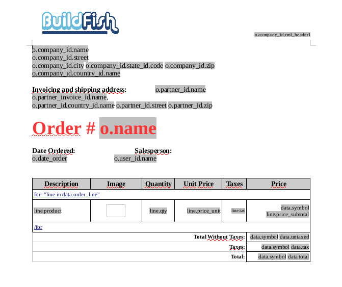
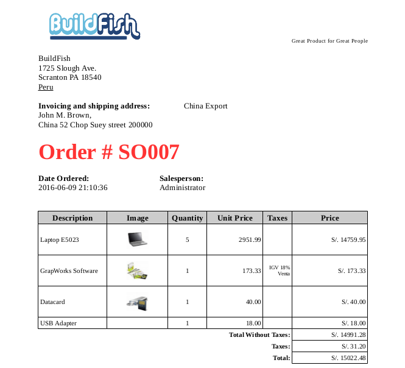
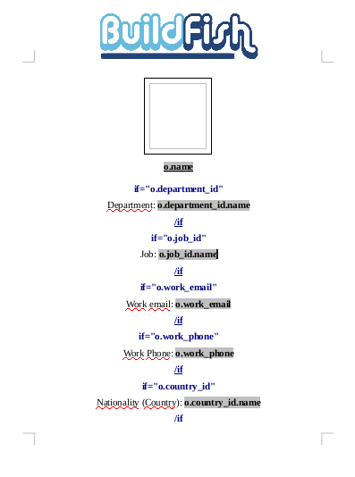
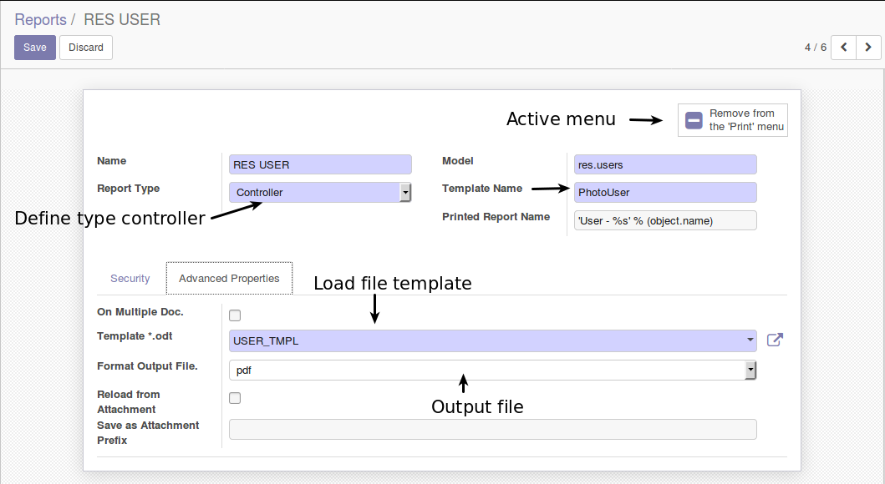
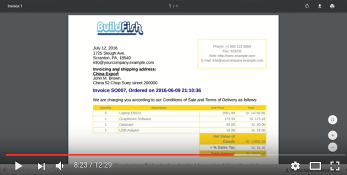
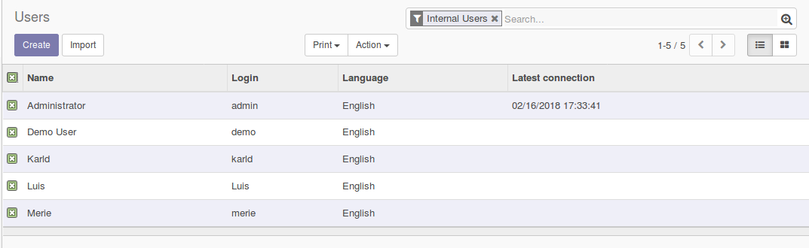
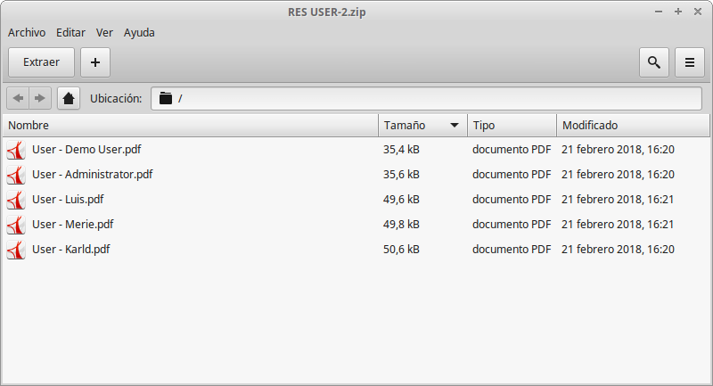

Module support python 3.x
Export data all objects odoo to OpenOffice, LibreOffice output files odt, pdf, doc, docx, ods, rtf.
File in.
File out [odt, pdf, doc, docx, ods, rtf]
Other example file in.
File out.
Ideal for creating contracts and other documents.
*.odt Using the word processor OpenOffice or LibreOffice
Example templates in module report_extend_bf_examples.
Note: LibreOffice (Version: 4.4.6.3 or better). tested with LibreOffice write version: 4.4.6.3 or 6.0 (Optional for create templates).
Settings/Technical/Reporting/Reporting
Show video demo:
If there are several records return an file compress.
Return file *.zip
